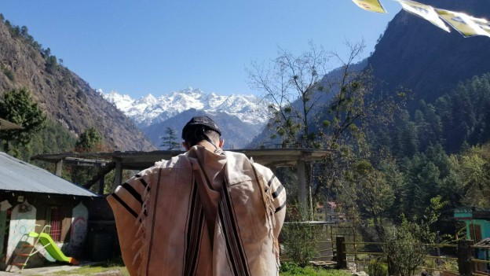

1. תהלוכה ביזארית
אחד הפתרונות ״עוקפי נפש בהמית״ שמצאו חסידים כדי להתמודד עם הפער שבין מוח ללב, הוא התוועדות חסידית. יושבים יחד יהודים, אומרים ׳לחיים׳ ומספרים סיפורים חסידיים, מאורעות מהחיים, ופתאום הלבבות נפתחים וקרן אור אלוקית בוקעת את אפלת ה׳יישות׳ * צרור סיפורים אמיתיים שאירעו בבית חב״ד שלנו בקאסול, הודו, שנגעו ב
אחד הפתרונות ״עוקפי נפש בהמית״ שמצאו חסידים כדי להתמודד עם הפער שבין מוח ללב, הוא התוועדות חסידית. יושבים יחד יהודים, אומרים ׳לחיים׳ ומספרים סיפורים חסידיים, מאורעות מהחיים, ופתאום הלבבות נפתחים וקרן אור אלוקית בוקעת את אפלת ה׳יישות׳ * צרור סיפורים אמיתיים שאירעו בבית חב״ד שלנו בקאסול, הודו, שנגעו בי * גדול כוחו של סיפור למשוך את הלב
מאת הרב דני וינדרבאום

1. תהלוכה ביזארית
באחד הימים, בתחילת שליחותנו בקאסול, החלטנו לעשות משהו שימשוך את תשומת לבם של המטיילים הצעירים. רצינו לגרום לכך שאפילו אלה שאינם מעיפים מבט נוסף בעוברם ליד הבית חב״ד יהרהרו על התוכן היהודי של המקום. ההחלטה נפלה: לכתוב שלט ׳שמע ישראל׳ מאיר עיניים באורך 25 מטר על כל הגדר ההקפית של הבית חב״ד. לשם כך נסעתי לעיר סמוכה, לקנות בד לבן וצבעים מתאימים, ומטיילת צעירה בשם מיטל, שהתברכה בחוש לגרפיקה וציור, לקחה על עצמה את השרטוט והצביעה.
במשך שבוע שלם היה הבד מונח על רצפת הבטון בסלון הבית חב״ד. המלאכה נעשתה בקפידה רבה, וסרטוט האותיות לבדו ארך שלושה ימים. התוצאה שיקפה את מידת ההשקעה: גוונים שונים של אדום יצאו מתוך הכיתוב, תוך שהם מסמלים את האש היהודית הפנימית הטמונה בפסוק. בעודנו מרימים את השלט, קלטנו שהצבע עבר דרך הבד ונמרח על רצפת הסלון. לכאורה אין בעיה, שכן קצת טרפנטין אמור לתקן את הנזק. אבל לפתע התברר שזה לא פשוט כל כך. הסיבה: מיטל העתיקה את הפסוק מאחד הספרים, ובמקום לציין את השם כנהוג באות ה״א (ה׳), היא כתבה את השם המפורש במלואו - וזה הועתק לרצפה.
עמדנו לפני בעיה הלכתית רצינית. אמנם לא זכינו עדיין לרב מורה הלכה בקאסול, אבל מהמעט שידענו זיהינו שישנה בעיה: אסור למחוק את שם ה׳, ובוודאי שאסור לבזותו על–ידי דריכה עליו. בקיצור, יש לנו עכשיו בתוך הבית חב״ד אזור ששטחו שני מטרים רבועים שהוא מחוץ לתחום ואסור לדרוך עליו - לפחות עד שנשאל רב מוסמך מה לעשות.
הרב פסק שלמרות הקושי בדבר, יש להפריד את שם ה׳ מן הרצפה מבלי שימחק, כך שייווצר לוח בטון שלם ועליו שם ה׳ - אותו נצטרך לגנוז במקום כלשהו. מכיוון שאף אחד לא הרשה לנו לחפור בור כה גדול בחצרו ולקבור שם משהו (כנראה פחדו מעין הרע…), נאלצנו לבחור באופציה אחרת ולגנוז את השם המפורש בנהר המצוי במרחק 300 מטר.
כדי להבין את הסיטואציה, צריך להזכיר שהודו היא יבשת שטופה בעבודת אלילים ואמונות כוזבות וזרות. כמעט בכל בית עסק מוצב פסל של אליל כלשהו שההודים מקטירים לו קטורת בפולחן הבוקר שלהם. אחת לשבוע בממוצע עוברת תהלוכה ברחוב הראשי בעיר בדרכה לאירוע באחד המקדשים, ובראשה, על כתפי האנשים, פסל של אליל כלשהו. מדי פעם לגלגלתי על ההודים המקומיים איתם הייתי בקשר על כך שאליליהם צריכים שמירה מפני גניבה, או שמשעמם להם ולכן צריך להוציא אותם מדי פעם לטיול בעיר…
לאור התשובה שקיבלנו מהרב הבנתי שגם אנחנו, להבדיל, עומדים להיראות בדיוק כך כאשר נצא למין ׳תהלוכה׳ קטנה עם חפץ כלשהו על כתפינו… נו, חשבתי לעצמי, ״זה כנגד זה עשה האלוקים״. הזמנתי צוות של פועלים מקומיים עם פטישי 5 קילו ואזמלים כדי לפרק את הרצפה ולהכין אותה לגניזה. באמצעים המיושנים שעמדו לרשותם, הזדקקו העובדים לשני ימי עבודה כדי לפרק את הרצפה מבלי לפגוע בה. כדי לזרז את המלאכה הזמנתי עובדים נוספים, ובסך הכל עמדו לרשותנו 12 עובדים כדי לסחוב את רצפת הבטון (שאורכה 2 מ׳ ועוביה 15 ס״מ). לבסוף מצאנו את עצמנו בתהלוכה למול עיניהם המשתאות של עשרות מטיילים, שהסתקרנו מהמחזה וניסו להבין את הסיטואציה אליה נקלעו.
הבעל–שם–טוב קובע ש״כל מה שיהודי רואה או שומע הוא צריך ללמוד ממנו הוראה בעבודת ה׳״. בתום הסאגה הזאת עצרתי להתבונן איזה פרק בעבודת ה׳ אפשר ללמוד מכל האירוע. חשבתי לעצמי, כמה כבוד אנחנו נותנים לשמו של הקב״ה על–פי ההלכה; כשאנו רואים דף קרוע מסידור אנו מזדרזים להרים אותו מהרצפה ולנשקו בטרם יוחזר לשכון במקום מכובד. ומה לגבי יהודי? הרי כל יהודי נושא בתוכו חלק מהקב״ה ממש. האם אני מכבד ומוקיר כל יהודי באותה מידה לפחות? הרי בסופו של דבר שם, ברצפת בית חב״ד בקאסול, רק שם ה׳ היה כתוב, ואילו אצל יהודי זה ממש הקב״ה, בכבודו ובעצמו. האם את היהודי אני מכבד כראוי?!…
2. מחפשים אחר נעדר יהודי
אחד החלקים המעניינים בבית חב״ד, הם הארוחות המשותפות בשבתות, שמתקיימות בהשתתפות מאה עד שלוש מאות איש. זו הזדמנות פז לומר משהו שישבה את לב המטיילים.
אחד מפרחי ה׳שלוחים׳ בבית חב״ד קאסול היה בחור צעיר בשם שניאור פוגאטש, בעל כישרון מיוחד לעמוד ולדבר בפני קהל ולזכות בתשומת לבו.
פעם אחת סיפר שניאור לשומעיו את הסיפור הבא:
בהיותו בחור ישיבה צעיר ניסה לתפוס טרמפ מישיבת חב״ד בצפת לאזור המרכז. אחרי שהמתין שעה ארוכה לטרמפ, עצר לו נהג משאית. בין נהגים לטרמפיסטים ישנה הסכמה אילמת שמדובר ב׳עיסקה׳ - תפקידו של הנהג לנהוג ותפקידו של הטרמפיסט לדאוג לכך שמטיבו יישאר ערני ולא יירדם. ואין לך מרתק כדבר תורה כדי לפעול זאת.
הסיפור הזה ארע בשבוע בו קראו את ׳פרשת העגל׳ בה מוזכר חטאם החמור של בני ישראל שעבדו לעגל מיד לאחר שה׳ דיבר איתם פנים אל פנים בעשרת הדיברות. שניאור הפנה לנהג את השאלה הידועה - ״כיצד ייתכן שמיד לאחר שהקב״ה דיבר עם בני ישראל ׳פנים בפנים׳ ואמר להם ״אנוכי ה׳ אלוקיך…״ חטאו בני ישראל בעברה חמורה כל כך של עבודה זרה״.
הנהג עצר מיד את שטף דיבורו. ״אל תגיד לי. אני אגיד לך. אתה יודע למה הם חטאו?….כי אנחנו עם נורא״!
שניאור עצר כאן את סיפורו ודילג לאפיזודה אחרת, שקרתה זמן קצר קודם לכן בבית חב״ד. אחד המטיילים הישראלים יצא מהגסט האוס לטיול בבוקר ולא חזר. אחרי זמן מה הרגישו החברים בהיעדרותו וחשדו שמשהו אינו כשורה. הם עדכנו אותנו ואת בני משפחתו שהיו בארץ ישראל על חששותיהם.
חברת הביטוח הופעלה במהירות, ובמשך כחודשיים סרקו משלחות חיפוש של אנשי מקצוע בליווי עשרות מטיילים ישראלים את האזור כולו בחיפוש אחר הישראלי הנעדר.
אחד ההודים המקומיים, בעל חברת חילוץ שעזר בעבודות החיפוש, פנה אלינו ואמר כך: ״אני עוסק בחיפושים כבר שנים רבות. חיפשתי מאות אנשים שנעלמו באזור ומעולם לא ראיתי משלחת של גרמנים שמחפשת מטייל גרמני שעקבותיו אבדו, וגם לא משלחת איטלקית או בריטית. למה אצלכם אם משהו קורה - כולם באים לעזור״?
כל אחד רואה מה שהוא רוצה לראות! למה דווקא לנו קשה כל כך לראות את האמת הפשוטה ש״אתה בחרתנו מכל העמים״? האומנם אי אפשר לראות שיש בנו משהו מיוחד?
3. איך מתגברים על משקל–יתר
בפעם הראשונה שיצאנו לשליחות היינו ארבעה: אשתי ואני, וכן שני ׳שליחים׳ צעירים, שתפקידם לסייע לנו בעבודתנו השוטפת. כיוון שהייתה זאת כאמור הפעם הראשונה שהגענו למקום, הבאנו איתנו ציוד רב: ספרים, קופסאות שימורים ותשמישי קדושה. לקראת הנסיעה ספרנו 12 תרמילים ענקיים עמוסים כל טוב וכעת היינו מוכנים לצאת לשליחות.
חותני התגייס לסייע עם טנדר ענק עליו הועמס המטען. שמחים ומאושרים יצאנו בדרכנו לפתוח בית חב״ד בהודו. בדרך לנתב״ג שאל אותי חותני כיצד אנו מתכננים להעביר את כל הכבודה הזאת במטוס, לנוכח העובדה שהיינו רק ארבעה אנשים אבל עם ציוד שיספיק לארבעים שנה. תשובתנו הפשוטה - אנו שלוחים של הרבי מלך המשיח וממילא הכול יסתדר - לא שכנעה אותו, ומפני הבושה הצפויה בדלפקי הכרטוס הוא לא נכנס אתנו לאזור הצ׳ק אין ורק המתין לנו בחנייה למקרה הצורך.
התייצבנו בעמדת הכרטוס שלושה: אני, אבי ואביו של אחד מהשליחים הצעירים. הנחנו את התרמילים על המשקל; הסך הכל הורה על 480 ק״ג. כאשר ביקשו מאתנו את דרכוני הנוסעים הופתעו לראות שמדובר רק בארבעה נוסעים, ולא בעשרים. המכרטסת ההמומה קראה למנהל הטיסה והסבירה לו את המצב.
אחרי שהבין שזו לא מתיחה, מנהל הטיסה ניסה להסביר שאין אפשרות להעלות למטוס משקל חורג של 400 ק״ג ללא תשלום. אמרתי לו שאנו שליחים של הרבי העומדים לפתוח בית חב״ד. זה אומנם לא עשה עליו רושם גדול, אך משום מה היינו רגועים וידענו שהכל יסתדר, וכל המטען שהבאנו יעלה בשלום לטיסה.
השעון המשיך לתקתק, ורוב הנוסעים סיימו כבר את הצ׳ק–אין. ישבנו ליד הדלפקים, מצפים לנס, ומדי פעם מנהלים שיחה עם עובדי חברת התעופה. בינתיים ניגש אבא של אחד השליחים אל מנהל הטיסה ופתח איתו בשיחה. האב סיפר שהוא בעל תפקיד בכיר במשרד הבריאות, והמנהל מצדו סיפר שהוא מעוניין לפתוח מסעדה בטרמינל, אך מתקשה להשיג את האישורים התברואתיים הנדרשים. מתברר שלא היה צריך יותר מזה; בין שני הגברים נרקמה מיד עסקה של ׳יד לוחצת יד׳, מטען תמורת אישורים.
אבל חכו, זה לא נגמר. התברר פתאום שהתרמילים שארזתי היו כבדים מדי, כ–40 ק״ג לתיק, ולכן אי אפשר לעלות אותם לטיסה. מנהל הטיסה לא התבלבל, נכנס למשרדו ויצא משם עם עשרה תיקים של חברת התעופה אותם העניק לנו במתנה על מנת שנפזר את המשקל.
וכמו במגילת אסתר, הנס שלמעלה מהטבע התלבש בתוך הטבע, וכולנו הרגשנו יד מכוונת המסתתרת כאן. הלקח ברור: כשאתה מאמין במשהו והולך איתו עד הסוף, הדלתות הנכונות ייפתחו בפנייך.
4. כשהביקוש גובר על ההיצע
כאשר הגענו לקאסול השעה הייתה שלוש לפנות בוקר. בחוץ שרר חושך כבד, ועל תאורת רחוב אין על מה לדבר. לא ידענו בדיוק לאן הגענו, במיוחד לנוכח העובדה שהיה זה ביקורנו הראשון בקאסול.
מבעד לחשכה הצלחנו לראות מישהו הולך בצד הדרך ועצרנו לשאול על חדרי אירוח ללילה. מתברר שהאיש היה בעלים של ׳גסט האוס׳. שכרנו ממנו חדר והחלטנו להתעורר מוקדם למחרת לחפש משכן קבע לבית חב״ד.
לאחר סיבוב של שעתיים בקאסול נוכחנו לדעת שהמקום המתאים ביותר לצורכי הבית חב״ד הוא… ה׳גסט האוס׳ בו התארחנו.
יום חמישי, אחת עשרה בבוקר. בדיוק חתמנו חוזה עם בעלי ה׳גסט האוס׳ והתחלנו להכין את המקום לפעילות לקראת שבת, שהייתה כבר בפתח. ברוך ה׳ הכל עבד כמו שצריך למרות שהתחלנו לבשל רק בשישי בצהריים, ובשבת הראשונה שלנו התארחו בבית חב״ד בקאסול כמאה וחמישים מטיילים ישראלים.
ראש השנה קרב ובא, ואנחנו עשינו חושבים: אם בכל שבת מגיעים מאה וחמישים איש, לראש השנה יגיעו לפחות מאתיים וחמישים. התכוננו בהתאם: שכרנו את המקום הגדול ביותר שמצאנו בקאסול, ופתחנו בהכנות לוגיסטיות לחג.
ערב ראש השנה, בין הערביים. קיבלנו בסבר פנים יפות את החבר׳ה שהגיעו להתפלל את התפילה הראשונה בשנה החדשה. בית כנסת קטן, עמוס אנשים רובם לבושים לבן, תפילה קצרה ורגועה שבסיומה מברכים איש את רעהו ״לשנה טובה תכתב ותחתם״. אך כשיצאתי החוצה הוכיתי בהלם: עמדו שם, בחצר הבית חב״ד, מאות אנשים, שנדמה לי שהיו קצת רעבים. הייתי חדש בעניינים ועדיין לא פיתחתי חוש לאמוד את מספר האנשים שעמדו בחוץ, אבל הבנתי מיד שזה הרבה יותר גדול מכל מה שיכולנו לצפות לו. העמדתי פני רגוע ושלו והזמנתי את ההמונים להיכנס ולתפוס מקומות ליד השולחנות. אחרי כמה דקות התברר שהאולם מלא עד אפס מקום, בזמן שבחוץ ממתינים עוד כמאתיים איש. הייתי בין הפטיש לסדן; מצד אחד הרי זה מה שרצינו, שיגיעו לבית חב״ד כמה שיותר חבר׳ה. מצד שני לא היינו ערוכים למספר גדול כל כך של אנשים. לא ידעתי מה לעשות. הלכתי הצדה כדי להתרחק מהלחץ, והתחלתי לדבר עם הקב״ה: ״הרי למה אני פה אם לא בשבילך? תדריך אותי מה צריך לעשות…״
בעודי מדבר עם בוראי, הגיעו שני בחורים בכיפות סרוגות. חשבתי לעצמי שגם הם באו לבשר שאין עוד מקום, אך הפעם הופתעתי לטובה. הם כבר ארגנו וביצעו תכנית חלופית: יצרו קשר עם אחת המסעדות הגדולות בסביבה וקיבלו אישור לערוך שם עוד סעודת חג. הבעלים של מסעדה אחרת נאות להקצות את הכיסאות והשולחנות שלו, וכל מה שנדרש כעת היה רק האישור שלי.
מיד התעשתי - הרי זה מה ש״תכננתי״ לכתחילה, לא?… זירזתי אותם למלאכה והמשכתי לקבל את פני המטיילים לאירוע החדש שנפתח בניהולו של אחד הבחורים. מזל שאשתי הכינה כמויות אדירות של תבשילים.
האירוע הסתיים בהצלחה גדולה מהמשוער. לא יכולתי שלא לראות בכך עוד נס בשרשרת הנסים הקשורה ביציאה לשליחותו של הרבי מלך המשיח שליט״א. חשבתי גם על החבר׳ה שפתרו את הקושי הבלתי צפוי והודיתי להם על התושייה שגילו. הרי הכי קל להתריע על בעיה (או להתלונן עליה). אבל הכי חשוב - להציע פתרון ולבצע.
5. גלגוליו של סידור צבאי
באחד הימים הגיע לקאסול בחור כבן עשרים ושמונה, יותם. אנו קראנו לו ׳רמבו׳, כיוון שהיה מ״מ לשעבר בגולני. למרות שהיה בקאסול, בירת ה׳סטלנים׳ הגדולה ביותר בצפון הודו, רמבו לא ויתר על ריצת בוקר. לשמחתנו, יותם השתחרר מהצבא רעב לרוחניות, ותוך זמן קצר התחיל ללמוד אתנו חסידות ולהניח תפילין מדי יום.
יום אחד, נדמה לי שזה היה ביום ששי, נכנסתי לבית הכנסת והופתעתי לראות את יותם עטור תפילין ובוכה כילד. חששתי מאוד שמשהו רע קרה, אולי חלילה קיבל בשורה רעה מהבית, אך כששאלתי אותו לפשר בכיו, סיפר לי שקרה לו נס נפלא מעבר לכל דמיון.
כשהתגייס והוא בן שמונה עשרה, החל תהליך של תשובה, הניח תפילין ואף שמר שבת. יותם הגיע מבית חסר ידע בסיסי ביהדות, ולכן ביקש מאחד מחבריו לפלוגה שידריך אותו כיצד להתפלל. החבר לקח סידור צה״לי והתחיל לסמן את המקומות בתפילה שבהם יש לשבת או לעמוד, להתפלל בלחש או בקול. ההתעוררות לא החזיקה מעמד ואחרי כשנה הכל נגמר. כנראה היה קשה מדי בלי לצאת עם החברים שאתה חוזר הביתה אחת לשלושה שבועות. השנים חלפו, יותם התקדם בסולם הדרגות, אך רק כשהשתחרר ויצא להודו נפתח הלב מחדש.
״אתמול ישבתי ב׳גסט האוס׳ ואמרתי לקב״ה - ״אתה יודע שאני באמת רוצה לשמור תורה ומצוות, אבל זה קשה לי, זה גדול עלי. אני חייב איזשהו סימן או עזרה, כי אין לי כוחות למאבק הזה״.
באותו יום הגיע לבית חב״ד להניח תפילין, וכאשר פתח את אחד הסידורים - הצטמרר: ״פה עומדים״, ״את זה אומרים רק בשני וחמישי״, ״הקטע הזה רק במניין״… זה היה הסידור שלו מהצבא, סידור שלא ראה כעשר שנים! אחרי שהתפלל וביקש סימן שהקב״ה מעוניין בתשובתו, הוא קיבל סימן - ועוד איזה!…
התרגשתי כששמעתי את הסיפור. התרגשתי מצד הנס והחסד האלוקי, בכל זאת הקב״ה הטיס סידור מהארץ אתמול בלילה או שצפה את הכל מראש ושלח את הסידור עם אחד המטיילים.
6. קושי הוא עניין יחסי
אחד המקורבים לבית חב״ד היה בחור בשם תום. הוא לקח את הדברים ברצינות ותוך זמן קצר התחיל ללמוד אצלנו מדי יום, להתפלל שלוש תפילות ולשמור שבת באופן מלא. הוא התקדם מהר, אולי מהר מדי, ובשלב מסוים התחלתי לדאוג שזה יותר מדי טוב מלהיות אמתי.
אחרי חודש וחצי בערך, כשישבנו במרפסת לאחר שיעור ולפני ארוחת בוקר, פתאום זה קרה. ״מי אמר בכלל שהיהדות היא אמת״? החל תום להתלונן. התברר שבעצם ״מאד קשה לו״ ושכל העסק ״לא פשוט בכלל״.
האמת היא שבאותו רגע נרגעתי. בפירוש שמחתי לשמוע אותו מתלונן. זה הפיג את חששותיי שמשהו בתהליך לא תקין.
בעודי חושב מה להשיב, קם אחד המטיילים שגם הוא הרבה להגיע לבית חב״ד כדי ללמוד וצעק לעברו: ״אתה חושב שלך קשה?… אבא שלי גוי! מי שהביא אותי לעולם, מי שגידל אותי, הוא משלושת הקליפות הטמאות שעליהן כתוב בתניא…
מילים אלו השתיקו לגמרי את תום והבהירו ללא ספק: האמת היא אמת, אך לכל אחד יש את הקושי שלו, הסרט שלו, והתלונות על כך לא מובילות לשום מקום.
7. נס רודף נס
כאשר בנינו את המקווה בקאסול נבנה במקביל גם המקווה בדראמסלה. המפקח על בניית שתי המקוואות היה הרב בועז לרנר, שהגיע במיוחד כדי לוודא שהפרויקט המסובך של בניית מקווה נשים ייעשה בהתאם לדרישות ההלכה.
הרב לרנר הגיע חמוש בהתלהבות ובצרור דולרים שהתקבלו מידו הקדושה של הרבי. חוץ מלהשגיח על בניית המקוואות הוא הקדיש את זמנו ללימוד תורה עם המטיילים, התוועד איתם ממושכות והצליח לשכנע לא מעטים מהם ללמוד פרקי תניא על–פה בתמורה לדולר של הרבי. רבים נענו לאתגר במטרה לקבל דולר בעל סגולות מופלאות, אבל כשניגשו למלאכה, נתקלו בקושי אדיר הכרוך בלימוד על–פה, ורובם לא הצליחו לשנן יותר מאשר שורות אחדות.
אחת המטיילות הפקחיות, מלי שמה, ניגשה לרב בועז בטענה מנצחת: ״כיוון שאתה טוען שהרבי מלך המשיח הוא גם הרבי שלי, ממילא מגיע לי דולר מהרבי שלי בלי קשר אם אלמד או לא״. מובן שטענתה הצודקת הצליחה לשכנע את הרב להעניק לה דולר, ואף- על–פי–כן השתדל לשכנע אותה לנסות להשלים לימוד של פרק אחד על–פה בהזדמנות הראשונה.
ההזדמנות הגיעה כאשר מלי סיימה את טיולה והגיעה למסע הקניות המסכם בדלהי, לפני השיבה ארצה. הפנאי והשעמום שלפני הטיסה אפשרו למלי להתרכז ולהצליח ללמוד במהירות פרק תניא על–פה, ובתור מישהי שעומדת בדיבורה היא ניגשה להיבחן עליו בבית חב״ד בדלהי.
באחד ממסעות הקניות שלה, כשהלכה ברחוב צר והומה אדם, מישהו חטף את התיק שלה וברח. היא ניסתה לצעוק, אך לא היה לה כל סיכוי והאיש מיד נבלע בין ההמונים. התיק ובו דרכונה, כל כספה במזומן והדולר שקיבלה מהרב לרנר - נעלמו. מלי שבה על עקבותיה לבית חב״ד, כדי להתעודד ולהתייעץ כיצד מתמודדים עם האובדן.
לאחר שהתקשרה לאמה וביקשה שתשלח לה כסף באמצעות ׳ווסטרן יוניון׳, ניגשה מלי לאחת החנויות ברחוב על–מנת למשוך את הכסף, ולאחר מכן התכוונה להמשיך לקונסוליה הישראלית כדי להוציא דרכון חדש. בעודה עומדת בתור, עמד לפניה אדם וספר שטרות כסף. לפתע הבחינה מאחורי כתפו בשטר שעורר את תשומת לבה. כל שטר שהתקבל מידי הרבי נשא עליו תאריך - הנוהג הוא שמקבל השטר היה מציין את התאריך שבו התקבל. מלי ראתה סימון תאריך בכתב יד על השטר - והבינה מיד שזהו הדולר שלה!
היא עוררה מהומה והאשימה את האדם שלפניה בגנבת ארנקה. אחר כך התברר שהאיש בסך הכל עשה טובה להודי אחר (הגנב) שהיה בחוץ והחליף עבורו שטרות. בהודו המשטרה עובדת קצת שונה מאשר במקומות אחרים. גנב שנתפס בקלקלתו קודם כל סופג מכות, מונח שנקרה בהודו במבוק מסאג׳, ורק אחר כך מתחילה החקירה. הגנב ההודי הבין שמוטב לו להחזיר את הגנבה ולא לחטוף. מלי קיבלה את כספה ואת הדולר של הרבי בחזרה, אך עדיין נותרה בעיה באשר לדרכון, אותו השליך הגנב מחוסר עניין לתיבת דואר באזור.
מלי, שכבר הכירה בגודל הנס ובהשגחה הפרטית שליוותה אותה, ניגשה לסניף הדואר המרכזי של דלהי כדי לחפש את דרכונה ולהספיק את הטיסה חזרה ארצה, אותה טיסה שחשבה שכבר לא תגיע אליה. רק כדי לסבר את האוזן, נזכיר שבדלהי גרים כ–15 מיליון תושבים לפחות, וסניף הדואר המרכזי בעיר קצת יותר גדול מזה שבפרדס חנה, למשל…
בצעדים בוטחים ניגשה מלי לאחת הפקידות וביקשה לדעת אם דרכונה האבוד נמצא. לפקידה לא היה מושג. תוך כדי השיחה ביניהן, שהתארכה מעבר לרגיל וגם עלתה לטונים גבוהים מהרגיל, הגיע אחד הפקידים לשאול במה מדובר. הפקידה סיפרה לו על התיירת המשונה שחושבת שיש סיכוי למצוא דרכון שאבד.
״תתפלאי״ הפקיד ענה לה, ״באמת הגיע למחלקה שלי דרכון זר״…
מלי הספיקה לתפוס את הטיסה ארצה כשבידיה הדולר מהרבי. היא החלה ללמוד במדרשיית חב״ד, ואת הזמנת חתונתה הדפיסה בצורת הדולר שקיבלה מהרבי, תוך שהיא כותבת בקצרה את הסיפור כולו על––גבי הכריכה״.
8. יושבים על המרפסת
אחד המקומות המבוקשים בבית חב״ד קאסול הוא המרפסת החולשת על הרחוב הראשי מצד אחד, ועל הנוף המשגע של הרי ההימלאיה מהעבר השני. יום אחד בעודנו יושבים במרפסת, משגעים את המטיילים, הבחנו בישראלי יוצא בסערה מהמסעדה מול הבית חב״ד ואחריו יוצא עוד ישראלי סוער אף הוא וצועק לו ״די יוסי תירגע״ ויוסי ענה לו בתוך סערת רגשותיו ״אני, אני, מי אני? אין ואפס! אבל בשביל הכבוד אני אפרק אותו!
אין ספק שכל מה שיהודי שומע זה הוראה בעבודת השם, אז שלא נרמה את עצמנו ונזרוק סיסמאות לאוויר, ״אני אין״, ״אני אפס״, הלוואי שהכל יהי׳ באמת! שנהיה בביטול לקב״ה באמת!